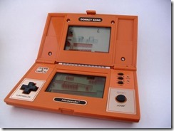

Évidemment ceci n'est qu'un brève aperçu de la grande Hisoire du Jeu-Vidéo
Faire manger des points à Pac-Man, libérer la princesse avec Mario et Luigi ou encore éliminer ses ennemis dans Fortnite... les jeux vidéo marquent depuis près de trois générations l’enfance de millions de personnes. Retour sur cinquante ans d’Histoire.
La première expérience de jeu fut réalisée grâce à Atari. Une console qui se fait très Internet qui avait uniquement le jeu Pong en ROM. Elle avait 2 manettes noires avec un bouton orange qui coulissait du haut vers le bas pour faire bouger la “raquette” dans le jeu. C’est tout !
C’est certainement à cause de ce fichu monde du PC que beaucoup de jeune de cet époque ont claqué tout ce qu'il pouvais recevoir comme argent dans les « upgrades » de la machine. Mais c’est surtout a ce moment là que les progrès technologiques les plus stupéfiants arrivait les uns derrières les autres. Un des premiers jeu qui ont marqué la jeunesse : Digger. Je ne sais pas pourquoi mais il les a marqué mais tou lemonde quui juait au Jeu-Vidéo s'en souvenait comme si c’était hier.Enfin, la dernière rupture technologique fut apportée par les cartes 3D (ou GPU) et celle qui a vraiment changé la donne fut conçue par 3DFX.C’est juste l’ancêtre de toutes les cartes 3D d’aujourd’hui. C’est eux aussi qui ont inventé le SLI ! Ensuite, une succession de courses à l’armement : nVidia qui finit par gagner la guerre des puces 3D et quelques jeux marquant comme Half Life 2 (moteur physique et environnement sonore en 3D) ou Counter Strike 1.6. Mais
Alors pourquoi avoir des consoles alors que beaucoup sont convaincus que le PC apporte le meilleur du jeu vidéo ? Parce que les jeux proposés et l’expérience sont différents. Et puis tout le monde ne jure pas que par les FPS et MMO. Par exemple, pendant longtemps, on ne se prenait pas la tête avec une console : tu branchais et ça marchait direct (cela a malheureusement bien changé…). Les manettes ont toujours été super bien étudiées. Et surtout, il y a Nintendo. Surement la marque la plus emblématique de toute l’histoire du jeu vidéo. En parlant de Nintendo, la plus-part on commencé par les fameuses petites consoles « Game & Watch » n’embarquant qu’un jeu et ressemblant étrangement aux DS d’aujourd’hui. Lien vers une chronologie complète des jeux vidéo
